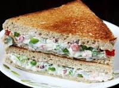

Mayonnaise Sandwich Recipe!

Description-
Yummy and easiest recipe which you can make under 10 minutes.
Ingredients:
- Bread
- Butter
- Mayonnaise
- Onions-2nos
- Capsicum-1nos
- Carrot-1nos
- Half a cup boiled sweet corns
- Oregano
- Chilli Flakes
- Black Pepper
- Homemade coriander chutney (optional)
How to make it-
- Chop the vegetables mentioned above in the ingredients list. you can also add vegetables of your choice.
- Now add all the chopped vegetables in a mixing bowl.
- After adding vegetables add mayonnaise and mix them well.
- Now add salt, black pepper, oregano and chilli flakes according to your taste.
- Mix, mix and mix.
- Now takes two slices of bread apply butter on one bread and homemade coriander chutney on another.
- Apply the fresh filling you just made on the bread.
- Grease your pan with some butter.
- Cook your sandwich on low flame until crispy or brown.
- Serve it hot with ketchup or schezwan chutney.
contact me